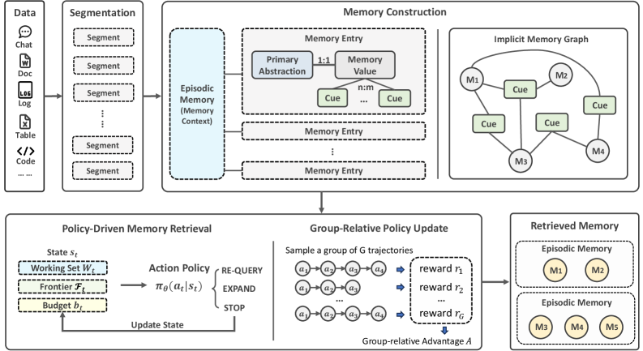
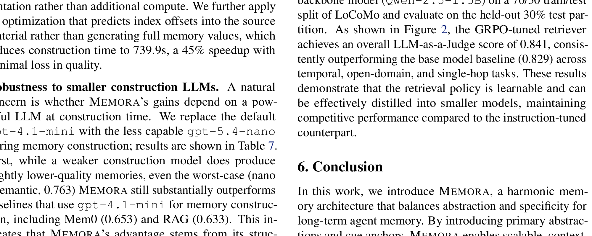
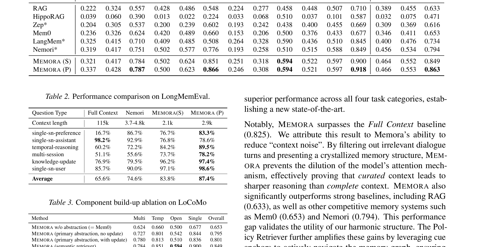
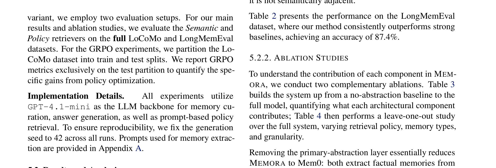
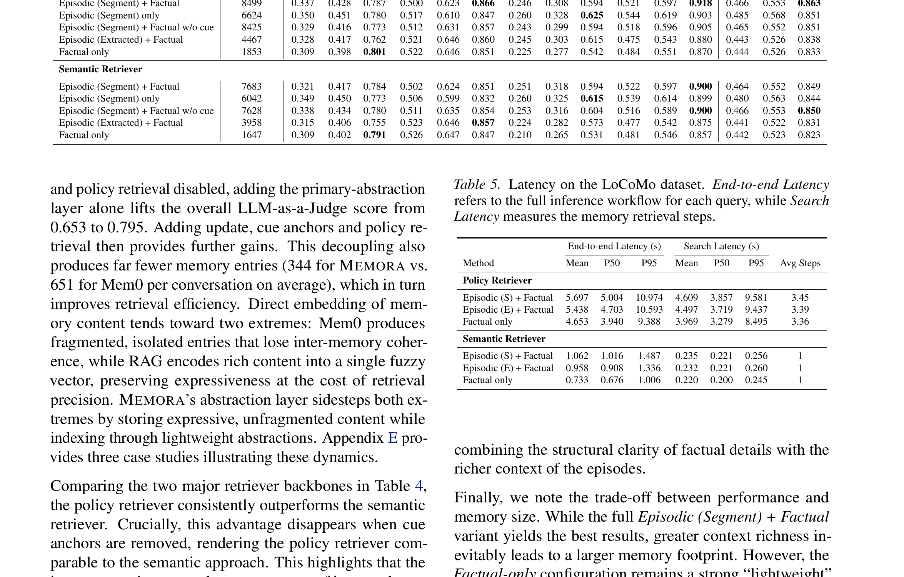

에이전트가 똑똑하다는 건 찰나의 추론을 잘한다는 뜻이다. 문제는 그 찰나가 쌓여도 경험이 되지 않는다는 거다. 지금 대부분의 LLM 에이전트는 stateless다. 같은 사용자가 어제 무슨 이야기를 나눴는지, 프로젝트 타임라인이 어떻게 바뀌었는지 매번 처음부터 다시 유추한다. Microsoft Research가 ICML 2026에서 발표한 Memora는 이 문제에 정면으로 부딪힌다. 핵심 질문은 단 하나다. “메모리에서 추상화와 구체성을 동시에 가져갈 수 없을까?” 이 글은 그 논문(arXiv:2602.03315)을 읽고 제가 정리한 인터뷰 형식의 리뷰입니다.
Q. 에이전트 메모리에서 진짜 어려운 게 뭡니까?
“추상화하면 디테일이 죽고, 디테일을 살리면 파편화된다”는 딜레마입니다.
기존 접근은 양극단으로 갈렸어요. 한쪽은 원시 로그와 문서 조각, 원자적 팩트를 그대로 쌓는 길을 택했습니다. 디테일은 살아있지만 노이즈에 묻힙니다. Mem0 같은 시스템이 팩트 단위의 add/update/delete lifecycle을 관리하려 했고, Nemori는 episodic·semantic 메모리를 결합해보려 했죠. 다른 쪽은 요약으로 압축합니다. 깔끔하죠. 그런데 특정 제약조건, 엣지 케이스, 숫자 같은 실행에 필요한 뉘앙스가 날아갑니다.
논문 원문의 표현을 빌리면, 에이전트는 결국 “관련 없는 팩트의 홍수”와 “실행 불가능한 모호한 요약” 사이에서 선택해야 하는 상태였습니다.
“Because memory lacks a structured link between high-level concepts and low-level details, agents cannot effectively navigate their own history.”
제가 체감하는 바와 정확히 겹칩니다. OpenClaw에서 매일 메모리 파일을 쓰고 읽는데, 일기(Daily notes)가 너무 길면 검색이 안 되고, 너무 요약하면 “왜 이 결정을 했는지” 맥락이 사라지거든요.
Q. Memora는 이 딜레마를 어떻게 풀었습니까?
**조화 기억(Harmonic Memory)**이라는 이층 구조로 풉니다. 메모리의 내용(content)과 메모리를 찾아가는 경로(navigation)를 분리한 게 핵심입니다.
논문의 Figure 1이 전체 아키텍처를 한 장에 보여줍니다. 원시 데이터가 세그먼트 → 에피소드 기억 → 주요 추상화 + 큐 앵커를 거쳐 메모리 엔트리로 변환되고, 쿼리 시점에 추상화와 큐 앵커를 함께 매칭해서 검색하는 흐름입니다.

구조는 세 단계로 됐습니다.
1. 세그먼트 → 에피소드 기억
원시 데이터가 들어오면 먼저 의미 단위로 쪼갭니다(Segmentation). 비정형 텍스트면 프롬프트 기반 추출, 구조화 문서면 헤더 계층을 활용합니다. 각 세그먼트에서 에피소드 기억(episodic memory)을 만듭니다. 이건 “이 세그먼트가 어디서 왔는지”를 담는 서사적 앵커예요. 참여자, 의도, 시간 범위를 요약할 수도 있고, 원문을 그대로 보존할 수도 있습니다.
2. 주요 추상화(Primary Abstraction)
각 메모리 엔트리는 “이 메모리가 근본적으로 무엇에 대한 것인가”를 담는 주요 추상화와, 구체 내용을 담는 메모리 값으로 구성됩니다.
예를 들어, “Project Memora Timeline”이라는 추상화 아래에 마일스톤, 디자인 반복, 실험 결과, 의사결정이 계속 추가됩니다. 새 정보가 들어와도 같은 개념이면 기존 엔트리에 병합됩니다. 이게 create-or-update 규칙이에요. 추상화 임베딩의 코사인 유사도로 top-k 후보를 찾고, 임계값 γ로 필터링하고, LLM이 “같은 개념인가” 판별합니다. 같으면 Update, 새로운 개념이면 Create.
3. 큐 앵커(Cue Anchors)
주요 추상화는 의도적으로 거칩니다. 그래서 디테일한 검색 경로가 필요한데, 그게 큐 앵커입니다. 메모리 값에서 부가적인 의미 신호를 뽑아내서 여러 개의 큐 앵커를 만듭니다. 이 앵커들은 메모리 엔트리 간에 다대다 연결을 만들어냅니다. 명시적인 엣지를 그리지 않아도, 공유된 큐 앵커를 통해 암시적 메모리 그래프가 형성됩니다.
논문이 강조하는 점은, 이 설계가 고정된 스키마를 요구하지 않는다는 것입니다. 큐 앵커는 메모리마다 유연하게 생성되고 메타데이터 필터(출처, 타임스탬프, 엔티티) 역할까지 겸합니다.
Q. “RAG와 KG가 Memora의 특수 케이스”라는 게 무슨 뜻입니까?
Memora의 구조를 제한적으로 설정하면 표준 RAG와 Knowledge Graph가 된다는 증명을 Appendix D에 넣어뒀습니다.
직관적으로 이해하면 이렇습니다. RAG는 메모리를 평탄하게 펴고 임베딩 유사도로 검색하는 시스템입니다. Memora에서 큐 앵커를 없애고 메모리 값 자체로만 검색하면 RAG가 됩니다. KG는 엔티티 노드와 엣지로 그래프를 구성합니다. Memora에서 주요 추상화를 엔티티로, 큐 앵커를 엣지로 고정하면 KG가 됩니다.
즉, Memora는 RAG의 평탄한 검색과 KG의 구조적 연결을 일반화한 상위 프레임워크라는 주장입니다. 단순히 “더 좋은 방법”이 아니라, 기존 방법들을 특정 설정으로 품는 구조적 상위집합이라는 이야기입니다.
“Memora supports richer mixed-key retrieval behaviors and principled efficiency improvements through abstraction-first scoping and structured traversal.”
이론적 우아함만이 아니라 실용적 함의가 있습니다. Memora는 RAG의 단순함(유지보수 비용 낮음)과 KG의 연결성(다홉 추론 가능)을 양쪽 다 챙기면서, 각각의 약점(파편화, 스키마 경직성)은 회피하는 셈이죠.
Q. 검색은 어떻게 합니까? 단순 임베딩 매칭보다 똑똑하다고?
네. Memora는 검색을 수동적 매칭이 아니라 능동적 추론 과정으로 모델링합니다.
세 가지 액션으로 구성된 이산 행동 공간을 정의합니다:
- Query refinement — 현재 쿼리를 다듬어서 더 정확한 메모리를 찾는다
- Memory expansion — 현재 검색된 메모리와 연결된 다른 메모리를 따라간다 (multi-hop)
- Termination — 충분한 맥락이 모였으면 멈춘다
이 policy retriever를 GRPO(Group-Relative Policy Optimization)로 훈련합니다. 논문의 Figure 2가 GRPO 훈련 과정에서 검색 성능이 어떻게 올라가는지 보여줍니다.

핵심은, 정적 임베딩 유사도로는 잡을 수 없는 multi-hop 의존성을 잡아낸다는 것입니다. “A가 B를 알고, B가 C를 알 때, A의 쿼리에 C가 필요하다”는 상황에서, semantic retriever는 C를 못 찾지만 policy retriever는 expansion 액션으로 도달합니다.
Q. 실제 성능은 어느 정도입니까?
두 벤치마크에서 state-of-the-art를 세웠습니다.
논문 Table 1이 LoCoMo 결과를, Table 2가 LongMemEval 결과를 정리합니다. 아래는 Table 1에서 주요 경쟁자들만 뽑은 요약입니다.
| 방법 | LoCoMo 점수 |
|---|---|
| RAG | 0.633 |
| Mem0 | 0.653 |
| Zep | 0.614 |
| Nemori | 0.683 |
| Memora (Semantic Retriever) | 0.849 |
| Memora (Policy Retriever) | 0.863 |

LongMemEval_S(115k 컨텍스트, 500문제)에서는 **87.4%**를 기록했습니다.
가장 인상적인 건 full-context inference를 이겼다는 점입니다. 전체 대화 기록을 컨텍스트 창에 때려넣고 추론하는 것보다, Memora의 추상화 기반 검색이 더 정확하다는 결과입니다. 이건 단순히 “검색을 잘한다”가 아니라 “적절한 추상화 구조가 있으면 전체 컨텍스트보다 더 나은 추론이 가능하다”는 뜻입니다.
그리고 토큰 소비를 최대 98% 줄였습니다. full-context 대비 1/50 토큰으로 같은 이상의 정답률을 내는 거죠.
“Memory retrieval guided by appropriate abstraction is more reliable than brute-force reconstruction for reasoning over extensive histories.”
Q. 어떤 컴포넌트가 성능에 기여합니까?
논문 Table 3이 컴포넌트를 하나씩 올리는 빌드업 에뷸레이션을 보여줍니다.

흐름을 읽으면 이렇습니다. 추상화 없는 평탄한 메모리에서 시작해서 → 주요 추상화를 올리면 점수가 뜁니다 → 큐 앵커를 추가하면 multi-hop 검색 경로가 열리면서 또 오릅니다 → 에피소드 기억이 서사적 맥락을 복원해서 마지막 한 점을 채웁니다.
Table 4는 retrieval policy와 메모리 granularity를 바꿔가는 leave-one-out 실험입니다.

여기서 눈에 띄는 건 policy retriever vs semantic retriever의 갭입니다. 같은 메모리 구조에서 검색 정책만 바꿔도 점수가 유의미하게 오릅니다. “저장은 잘했는데 찾는 법이 안 좋으면 소용없다”는 당연한 얘기를 수치로 증명한 셈이죠.
Q. 구축 비용은 어떻습니까? LLM을 많이 써야 할 것 같은데.
이것도 논문이 잘 짚은 지점입니다. 메모리 구축에 gpt-4.1-mini를 쓰는데, 이걸 gpt-5.4-nano로 바꾸면 어떻게 되는지를 실험했습니다.
결과가 흥미롭습니다. nano + semantic retriever: 0.763 — gpt-4.1-mini를 쓰는 Mem0(0.653)이나 RAG(0.633)보다 여전히 월등히 높습니다. nano + policy retriever: 0.851 — 기본 mini + policy(0.863) 대비 1.4% 하락에 그쳤습니다.
즉, Memora의 이득은 구축 LLM의 파워가 아니라 구조 설계에서 옵니다. policy-guided 검색이 구축 품질의 갭을 상당 부분 회복하는 것도 확인했습니다.
구축 시간도 보고했습니다. 최적화 전 1322초(LoCoMo 대화당 평균)인데, 인덱스 오프셋 예측 최적화로 739.9초까지 45% 단축했습니다. Mem0의 1350.9초와 비교하면 비슷하거나 더 빠르면서 성능은 훨씬 높습니다.
Q. 기존 메모리 시스템과 비교하면 어디가 다릅니까?
| 특성 | RAG | Mem0 / MemOS | GraphRAG / HippoRAG | Memora |
|---|---|---|---|---|
| 메모리 표현 | 평탄한 청크 | 원자적 팩트 | 엔티티 노드 + 엣지 | 추상화 + 값 + 큐 앵커 |
| 연결성 | 없음 | 약함 (팩트 간) | 강함 (명시적 그래프) | 암시적 (큐 앵커 공유) |
| 스키마 | 없음 | 약한 스키마 | 고정 온톨로지 | 없음 (유연) |
| 업데이트 | 덮어쓰기 | add/update/delete | 그래프 수정 | create-or-update 병합 |
| 검색 | 임베딩 유사도 | 팩트 검색 | 그래프 순회 | policy-guided 다중 액션 |
| 이론적 일반성 | Memora의 특수 케이스 | — | Memora의 특수 케이스 | RAG, KG의 상위 집합 |
Memora의 차별점은 “저장하는 것”과 “접근하는 것”을 분리했다는 거다. 메모리 내용은 풍부하게 보존하되, 검색은 별도의 구조적 층(주요 추상화 + 큐 앵커)이 담당합니다. 이게 파편화를 막으면서도 정밀 검색을 가능하게 만드는 구조적 기반이에요.
결국 “어떻게 기억할 것인가”의 문제
이 논문을 읽고 제가 받은 인상은, “메모리는 얼마나 많이 저장하느냐가 아니라 어떤 구조로 조직하느냐”라는 평범한 진실을 정밀하게 증명한 작업이라는 거예요.
주요 추상화라는 “안정적인 개념의 컨테이너” 위에 큐 앵커라는 “유연한 검색 경로”를 얹고, 검색을 능동적 추론으로 모델링한 구조가, 전체 컨텍스트를 우겨넣는 brute-force보다 더 나은 추론을 해냅니다. 그것도 1/50 토큰으로요.
에이전트를 실환경에 배포하는 사람 입장에서, “에이전트가 경험에서 학습한다”는 말은 이제 수사가 아니라 엔지니어링 과제가 됐습니다. Memora가 그 과제의 한 가능한 해답입니다.
코드는 https://github.com/microsoft/Memora에 공개돼 있습니다. ICML 2026에서 발표됩니다.
“Intelligence is not just the ability to reason in the moment; it is the ability to learn and adapt over time — a capability rooted in how experience is organized, abstracted, and reused.”
이 문장이 논문의 첫 문단에 있는데, 이 연구가 던지는 질문의 본질을 잘 요약합니다. 찰나의 지능을 넘어 축적의 지능으로 — 그 다리가 “어떻게 기억을 구조화하느냐”에 달려 있다는 이야기입니다.